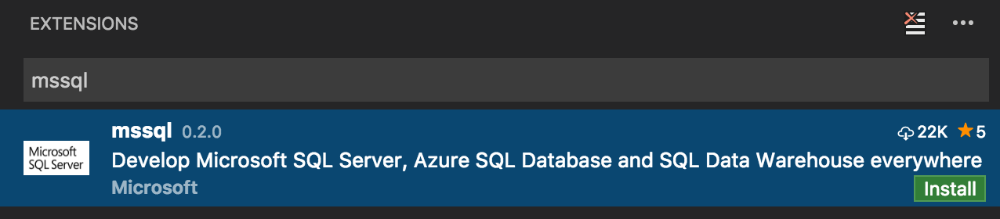
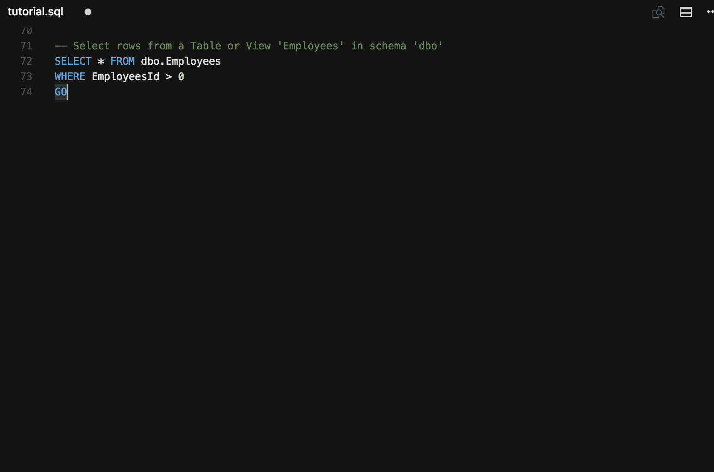
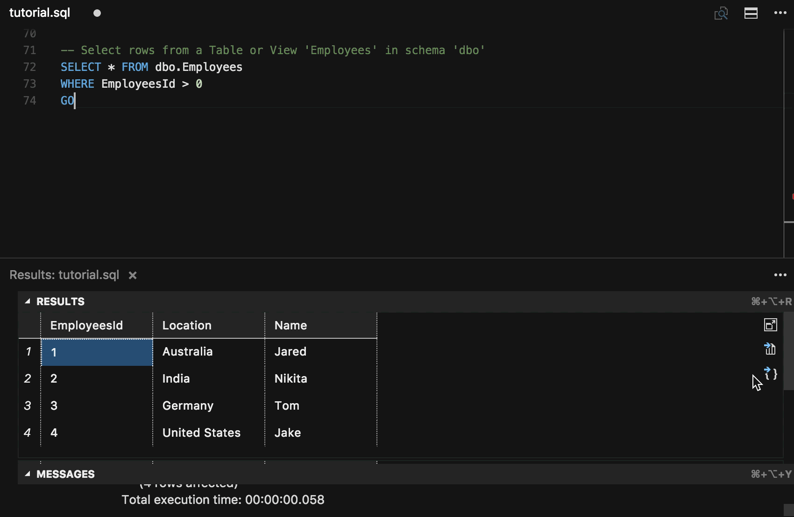
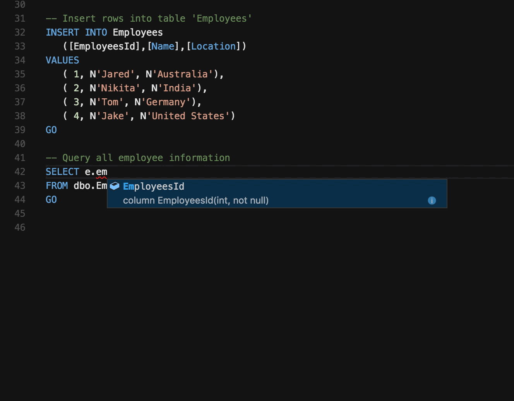
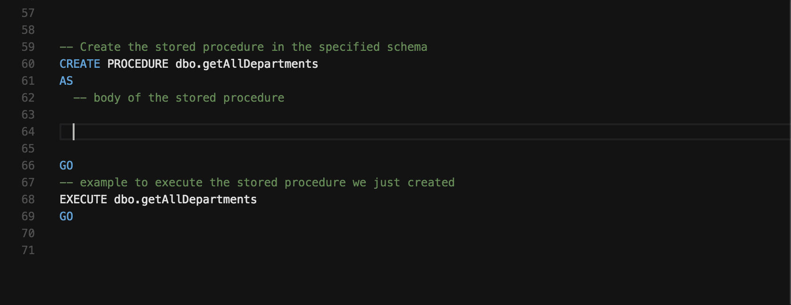
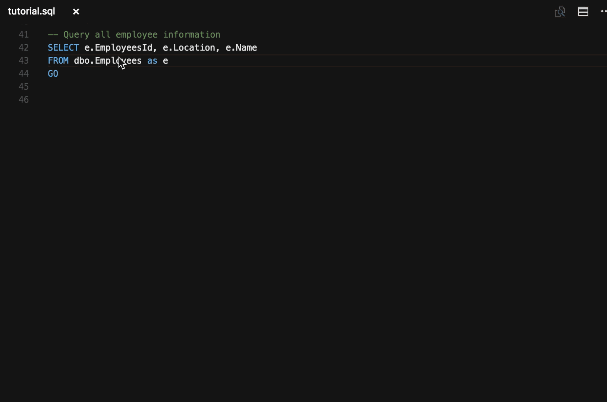
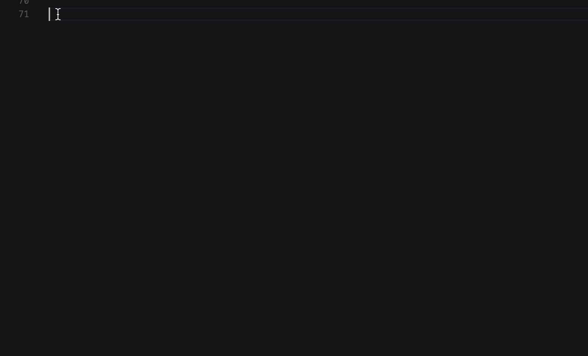

Turn Visual Studio Code into a powerful editor for Transact-SQL (T-SQL) development with the mssql extension available in the VS Code Marketplace. The mssql extension is optimized to work with SQL Server running on-premises, in any cloud, Azure SQL Database, and Azure SQL Data Warehouse.
Connect to SQL databases, type T-SQL code, execute T-SQL code, view results, and save results as JSON or CSV files. While typing T-SQL code, you get rich T-SQL language features like T-SQL IntelliSense (code completion), syntax highlighting, linting, code navigation and code snippets.
Download VS Code - If you haven’t downloaded VS Code yet, quickly install for your platform (Linux, Mac or Windows).
Install T-SQL support
Add T-SQL language support to VS Code by installing the mssql extension from the VS Code marketplace as follows:
- Open the Extensions view from VS Code side bar (⇧⌘X (Windows, Linux Ctrl+Shift+X)).
- Type “mssql” in the search bar, click Install, and reload VS Code when prompted.

Connect and Execute T-SQL
Easily connect to SQL Server running on-premises, in any cloud, Azure SQL Database, and Azure SQL Data Warehouse. Then, execute your T-SQL statements and batches to view results and messages - all within VS Code. Your recent connections are saved across sessions so you can quickly connect to your databases again.

View and Save Results
View results and messages when you execute your T-SQL code. Save results as a JSON or CSV file to use the data in your applications with just a few clicks.

T-SQL IntelliSense
As you type T-SQL code in the editor, VS Code provides intelligent code completion for T-SQL keywords, suggestions for schema object names (tables, columns, views), and parameter help for functions and procedures when connected to a database.

Linting
Linting is the analysis of your T-SQL code for potential syntax errors. Use Visual Studio Code to quickly navigate to the errors and warnings in your T-SQL code as you type.

Peek Definition/Go to Definition
Use Peek Definition and Go to Definition to quickly browse the definition of schema objects in your database such as tables, functions, and procedures while typing T-SQL code.

Snippets
T-SQL snippets provide code templates for commonly used T-SQL statements. Type “sql” to get the list of T-SQL snippets.

Next Steps
- Download the free SQL Server 2016 Developer Edition.
- Install the mssql extension from the Visual Studio Code Marketplace.
- Build an app using SQL Server - Get started with SQL Server on macOS, Linux, and Windows using your favorite programming language.
- Contribute to the mssql extension on GitHub. Submit a bug report or a feature suggestion on our GitHub Issue Tracker.